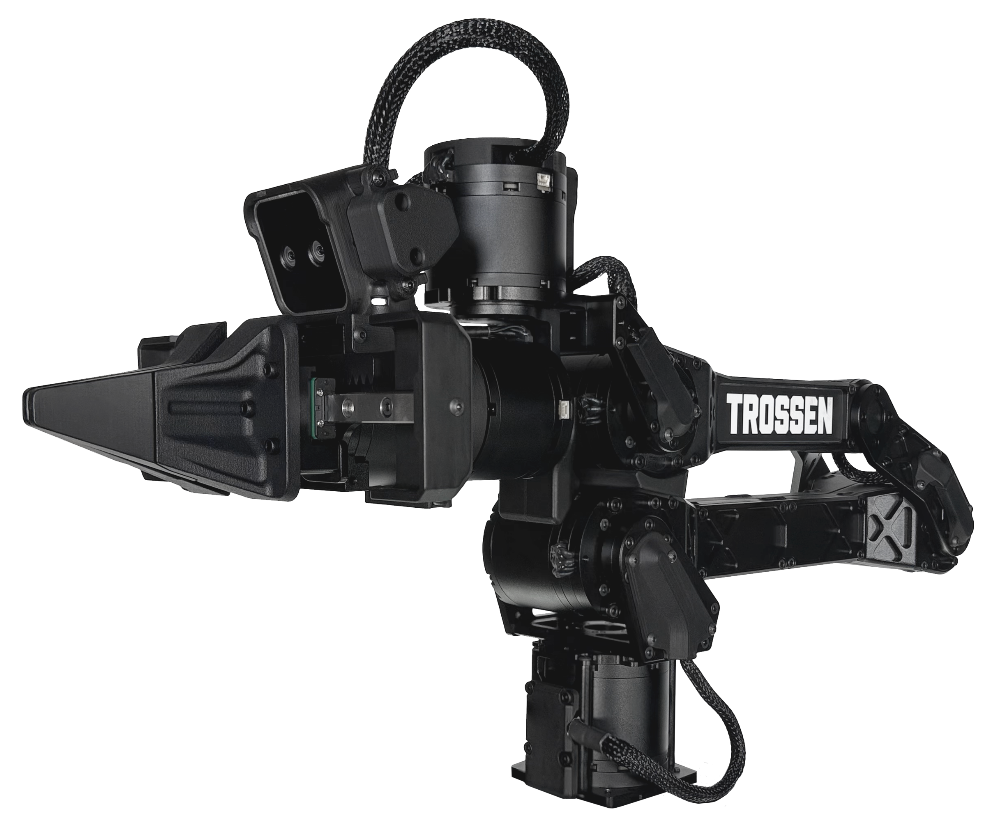

Courses in robotics, computer vision, embedded systems, and engineering fundamentals at Sonoma State University.
This course covers the fundamentals of robotic systems and computer vision, bridging theory and hands-on implementation. Students work with real robot arms, write ROS-based control code, and implement vision pipelines using OpenCV and deep learning frameworks.
The curriculum connects core engineering mathematics — kinematics, dynamics, linear algebra — to modern robot learning approaches including reinforcement learning and imitation learning. Graduate students (ECE 573) complete an independent research project.
A dedicated Robotics and AI Lab is being established at SSU to support EE 473/ECE 573 and ISL research. The lab will house multiple WidowX robot arms, UMI bimanual platforms, GPU workstations, and a structured environment for sim-to-real experiments. Students will have access to the lab for coursework, independent study, and ISL research collaboration.

WidowX Robot Arm (Trossen Robotics) — primary platform for EE 473/ECE 573 labs
Additional courses taught in the School of Engineering and Computer Science
Microcontroller programming, sensor interfacing, communication protocols (I²C, SPI, UART), and firmware development for real-time embedded applications.
Circuit analysis, Kirchhoff's laws, mesh and nodal analysis, AC/DC circuit theory, and op-amp applications — foundational course for engineering students.
Continuous and discrete-time signals, Fourier and Laplace transforms, filtering, and system analysis — core curriculum for MSECE majors.
A survey of landmark engineering innovations — from the transistor and the internet to medical imaging and renewable energy — exploring how technology reshapes society.